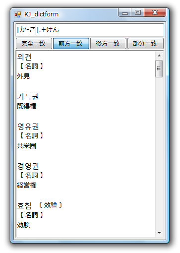

例えば「し.*けん」の場合、「し」で始まって「けん」で終わる語です。
「.*」は無しの意味もあるので「しけん」もマッチします。
たぶん一番有用なのはこの形と思います。

正規表現に関しては、他の詳しいページを参照して下さい。
正規表現の構文(MSDN) など
いくつか代表的なものを示します。
. 任意の 1 文字
* 0回以上の繰り返し
+ 1回以上の繰り返し
実験的に一部の正規表現検索をサポートしています。
使用できるのは以下の文字です。
. + ? * [ ] {}
正規表現を指定した場合は、
完全一致・前方一致・後方一致・部分一致の条件は無視します。
「.*」は何でも良いの意味になります。
例えば「し.*けん」の場合、「し」で始まって「けん」で終わる語です。
「.*」は無しの意味もあるので「しけん」もマッチします。
たぶん一番有用なのはこの形と思います。
正規表現に関しては、他の詳しいページを参照して下さい。
正規表現の構文(MSDN) など
いくつか代表的なものを示します。
. 任意の 1 文字
* 0回以上の繰り返し
+ 1回以上の繰り返し
[ ] で囲むとその中の文字のどれかであればマッチします。
"[はきじ]けん"の場合、 1文字目が「は」「き」「じ」のいずれかで，
"けん"で終わる単語にマッチします。
（"はけん"，"きけん"，"じけん" のどれかですね）
また [ ] の中に書いた"-"は範囲を示します。
"[か-こ].+けん"の場合、"か～こ"で始まり（か行の文字），
間に任意の 1 文字があり，
"けん"で終わる単語を表示します。

・正規表現検索は速度が非常に遅いです。
・まだ調整中のため、おかしな検索結果になる事が多々あります(バグあります)。
アルファベット指定の検索でも使用できます。

もちろん、ハングル指定の検索でも使用できます。